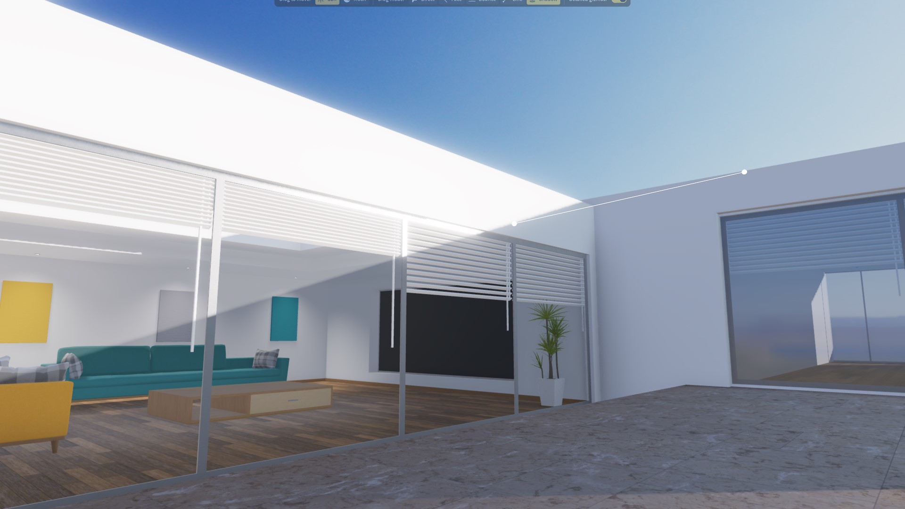
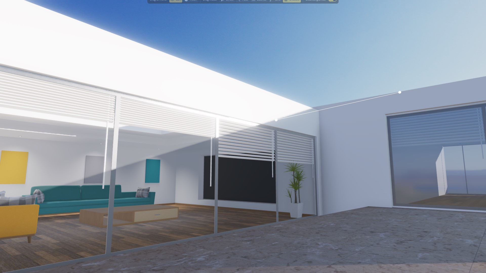

Meet the new arrivals.

Revered classic. Radical conversion.
The classic Reclass launched as Roblox's first recommendation-driven reclasser. To save space and integrate into your flow, it offered a fresh, focused and lovingly crafted experience, with predictive contextual recommendations at its core.
Now, the all-new Elttob Reclass refines those ideas with care and craftsmanship, built on years of experience, review, and community feedback. Elttob Reclass boasts an ultra-compact design that places prominence on Studio Elttob's most intelligent recommendation algorithms to date — all powered by the Elttob Suite's next-generation plugin framework for smoothness and fluidity that can't be beat.
Uncompromising slimness.
Low on screen space? Try Elttob Reclass' brand new ultra-compact design. The iconic suggestions list has been reimagined as Suggestion Flow - a smart, reactive stream of intelligent suggestions that flow across the screen horizontally. Suggestions are densely packed together and immediately apply with one click only, minimising your cursor's travel time.
Terminal velocity typing.
Introducing Intelligent Search — newly introduced to Elttob Reclass for light-speed, telepathic searching. Built on state-of-the-art algorithms from the world of ultra-performant terminal interfaces, enjoy split-second searches that keep up with keystrokes. And, with relevant results after as few as two characters, you'll never need tab-complete ever again — just type and go.
The most powerful Reclass engine ever.
Reclass on instinct — with lossless reclassing, Elttob Reclass backs up any data that's normally lost after a reclass, keeping your hard work safe from accidental reclasses. Plus, with advanced diffing that excludes default property values, whole-file reference analysis, extended support for attributes & tags, and nuanced destruction handling, Elttob Reclass just works every time.
Ditch the mouse.
With Instant Typing, Elttob Reclass automatically captures focus while the widget is open, letting you search instance types immediately after selecting targets in the Explorer. Plus, with Reclass Now, you can summon a lightweight Reclass interface no matter where you are in Studio. Just push a button and get suggestions.
Reclass where you work.
Whether you're an animator, environment designer, or lighting artist, the new Elttob Reclass is artist-friendly beyond any other. Get instant suggestions for reclasses whenever you work with lights, VFX, models, physics constraints, parts and much more, right in your 3D viewport. Your most common reclasses sit directly at your fingertips while you work — no more panels.
Built to be accessible.
The new Elttob Reclass becomes the new most affordable product in the next-generation Elttob Suite. With a massive 1/3 off permanently, Elttob Reclass is more readily accessible to creators worldwide. And with Access Anywhere, you're included, no matter where in the world you call home.

 


A brighter take on product and scene lighting.
What happens when you put a lighting artist in charge of building a lighting plugin? You get Elttob Relight, a completely new and creative perspective on an overlooked lighting tool, to maximise everything from UGC showcases to FPS levels.
Today's popular tools make you look at your light sources in the sky, so you can drag them around. This makes no sense when you're trying to light up objects on the ground. You can't see the effects of your changes, and serious friction blocks you from visual explorations and chance discoveries.
Elttob Relight changes that story, slashing your iteration time from minutes to seconds. It introduces four bespoke interaction modes, designed to keep your work directly in front of you. Each mode focuses in on one uniquely useful interaction, so you can perfect and tune each component of your lighting, and build muscle memory for your most common lighting tasks.
Diffused light on-demand with Face mode.
Face mode is optimised for working with smooth, organic surfaces such as terrain or character models. Click on any surface, and light will fall diffusely onto it from directly above. Ideal for workhorse lighting that doesn't draw attention, to let the content of your scene stand out.
Reveal the details with Bounce mode.
Place reflections and specular highlights exactly where you want them. In Bounce mode, drag across different surfaces and watch as the glints from the sun and moon follow your cursor. Dapple golden sunsets across water waves, set the tip of a sword ablaze in dusklight, and bring PBR materials alive.
Paint shadows precisely with Line mode.
Nail your composition with Line mode — just drag a line for shadows to follow. Paint bare walls with lighting from adjacent structures, drag out long winter shadows for impactful scenes, or extend leading lines with clean geometric shadows for that photo-perfect alignment.
Get perfectionist with Shadow mode.
Make pixel perfect tweaks to your lighting with the most intuitive interaction model yet: drag and drop your shadows as if they're physical, tactile objects. Shadow mode takes away the pressure of getting it exactly right first time; you're empowered to explore at the broad level, with easy, gentle finessing once it's time to polish up.
Spatial gizmos right when you need them.
Whether you require accurate angles or just need a helping hand getting your bearings. Elttob Relight includes simple, useful 3D gizmos that you can enable at a moment's notice, so you can directly see the key points and directions as you're relighting. Line up sun rays with key shapes on your model, align shadows beautifully with the geometry around them, or intuit where that specular highlight is coming from.